Introduction
TrIdent- Transduction Identification
TrIdent consists of three main functions which should be run in the following order:
-
TrIdentClassifier(): Classifies contigs as ‘Prophage-like’, ‘Sloping’, ‘HighCovNoPattern’, and ‘NoPattern’ using read coverage pattern-matching. -
plotTrIdentResults(): Plots pattern-matching results ofTrIdentClassifier(). -
specializedTransductionID(): Searches contigs classified as Prophage-like byTrIdentClassifier()for associated specialized transduction events.
TrIdent automates the analysis of transductomics data by detecting, classifying, and characterizing read coverage patterns associated with potential transduction events. Transductomics, developed by Kleiner et al. (2020), is a DNA sequencing-based method for the detection and characterization of transduction events in pure cultures and complex communities. Transductomics relies on mapping sequencing reads from a viral-like particle (VLP)-fraction of a sample to contigs assembled from the metagenome (whole-community) of the same sample. Reads from bacterial DNA carried by VLPs will map back to the bacterial contigs of origin creating read coverage patterns indicative of ongoing transduction. The read coverage patterns detected represent DNA being actively carried or transduced by VLPs. The read coverage patterns do not represent complete transduction events (i.e integration of transduced DNA into new bacterial chromosomes).
Reference: Kleiner, M., Bushnell, B., Sanderson, K.E. et al. Transductomics: sequencing-based detection and analysis of transduced DNA in pure cultures and microbial communities. Microbiome 8, 158 (2020). https://doi.org/10.1186/s40168-020-00935-5
Installation
CRAN install
if (!require("pak", quietly = TRUE)) {
install.packages("pak")
}
pak::pak("jlmaier12/TrIdent")
library(TrIdent)GitHub install
if (!require("devtools", quietly = TRUE)) {
install.packages("devtools")
}
devtools::install_github("jlmaier12/TrIdent")
library(TrIdent)Input Data
Transductomics data
Transductomics allows for the identification of bacterial DNA being actively carried or transduced by VLPs. A transductomics dataset consists of two parts- metagenomes from the whole-community and VLP fractions of a sample. The whole-community fraction is generated by extracting and sequencing DNA from the whole sample. The VLP-fraction is generated by extraction and sequencing DNA of the ultra-purified VLPs in the sample. VLP ultra-purification is generally done using CsCl density-gradient ultracentrifugation. Additionally, it is very important that the VLP-fraction is treated with DNase to remove free DNA! After sequencing, reads from the whole-community fraction are assembled and both the whole-community and VLP-fraction reads are mapped to the assembly. Read mapping should be performed using a high minimum identity (0.97 or higher) and random mapping of ambiguous reads. The pileup files needed for TrIdent are generated using the .bam files produced during read mapping.
Deep sequencing of the whole-community and VLP-fractions is needed for transductomics! Sample preparation, sequencing procedures, and bioinformatics methods are detailed in Kleiner et al.(2020).
Pileup files
TrIdent detects read coverage patterns using a pattern-matching algorithm that operates on pileup files. A pileup file is a file format where each row summarizes the ‘pileup’ of reads at specific genomic locations. Pileup files can be used to generate a rolling mean of read coverages and associated base pair positions across a metagenome assembly which reduces data size while preserving read coverage patterns. TrIdent requires that input pileups files be generated using a 100 bp window/bin size.
Some read mappers, like BBMap,
will allow for the generation of pileup files in the bbmap.sh
command with the use of the bincov output with the
covbinsize=100 parameter/argument. Otherwise,
BBMap’s pileup.sh
can convert .bam files produced by any read mapper to pileup
files compatible with TrIdent using the
bincov output with binsize=100.
TrIdent requires two pileup files from a transductomics dataset as input:
- A VLP-fraction pileup: Sequencing reads from a sample’s ultra-purified VLP-fraction mapped to the sample’s whole-community metagenome assembly.
- A whole-community pileup: Sequencing reads from a sample’s whole-community mapped to the sample’s whole-community metagenome assembly.
Remember- The data used for each pileup file must originate from the same sample. Pileup files must use a 100 bp window/bin size for the rolling mean.
The input pileup files must have the following format:
Dataframe with four columns:
- V1: Contig accession
- V2: Mapped read coverage values averaged over 100 bp windows
- V3: Starting position (bp) of each 100 bp window. Restarts from 0 at the start of each new contig.
- V4: Starting position (bp) of each 100 bp window. Does NOT restart at the start of each new contig.
| V1 | V2 | V3 | V4 |
|---|---|---|---|
| NODE_62 length_245921_cov_3.25857_ID_9556347 | 0 | 100 | 20626396 |
| NODE_62 length_245921_cov_3.25857_ID_9556347 | 0 | 200 | 20626496 |
| NODE_62 length_245921_cov_3.25857_ID_9556347 | 0 | 300 | 20626596 |
| NODE_62 length_245921_cov_3.25857_ID_9556347 | 0 | 400 | 20626696 |
| NODE_62 length_245921_cov_3.25857_ID_9556347 | 0 | 500 | 20626796 |
| NODE_62 length_245921_cov_3.25857_ID_9556347 | 0 | 600 | 20626896 |
TrIdentClassifier()
TrIdentClassifier() is the main function in TrIdent.
This function filters contigs based on length and read coverage,
performs pattern-matching to classify contigs, identifies highly
active/abundant and heterogenously integrated Prophage-like elements,
determines which contigs have high VLP-fraction:whole-community read
coverage ratios, identifies start and stop positions and sizes of
pattern-matches, and calculates slopes for Sloping pattern-matches.
Note that TrIdentClassifier() results should not be
taken at face value and some manual curation is needed! We recommend
careful examination of the output plots to determine if you agree with
the TrIdentClassifier() classifications.
Function components
Contig filtering
Contigs that are too short or have little to no read coverage are
filtered out prior to pattern-matching. TrIdentClassifier()
filters out contigs that do not have at least 10x coverage on a total of
5,000 bp across the whole contig. The read coverage filtering was done
in this way to avoid filtering out long contigs with short Prophage-like
patterns that might get removed if filtering was done with read coverage
averages or medians. Additionally, contigs less than 30,000 bp are
filtered out by default, however this can be changed with the
minContigLength parameter. While contigs shorter than
30,000 bp may be poor quality and are often not long enough to capture
complete transduction patterns, we allow users to set a minimum
minContigLength of 25,000 bp. If you would like to
reduce the size of your input pileup files for TrIdent,
consider pre-filtering your assembly for contigs greater than
25,000 bp prior to read mapping!
It is expected that the majority of contigs in the dataset are filtered out due to low read coverage during this step! If very few contigs are filtered out due to low read coverage, this may be an indication of DNA contamination in your VLP-fraction.
Changing pileup windowSize
The input pileup files have 100 bp windows in which the mapped read
coverage is averaged over. This small window size is needed to detect
read coverage patterns associated with specialized transduction which
may only span a few thousand basepairs. However, read coverage patterns
associated with other types of transduction generally don’t require the
resolution that 100 bp windows provide. While users can use the 100 bp
windowSize for TrIdentClassifier(), the
processing time will be increased significantly and noisy data may
interfere with pattern-matching. We find that the default 1,000 bp
windowSize provides a nice balance between processing time
and read coverage pattern resolution.
Pattern-matching
TrIdentClassifier() detects read coverage patterns in
the VLP-fraction using a pattern-matching approach. Several predefined
patterns, described below, are built using the specific length and read
coverage values of the contig being assessed. Patterns are translated
across each contig in 1,000 bp sliding windows and at each translation,
a pattern-match score is calculated by taking the mean absolute
difference of the VLP-fraction read coverage and the pattern values. The
smaller the match-score, the better the pattern-match. After a pattern
is fully translated across a contig, certain aspects of the pattern are
changed (i.e. height, width, slope) and translation is repeated. This
process of translation and pattern re-scaling is repeated until a large
number of pattern variations are tested. After pattern-matching is
complete, the pattern associated with the best match-score is used for
contig classification. Contigs are classified as ‘Prophage-like’,
‘Sloping’, or ‘NoPattern’ during pattern-matching.
Patterns
Sloping:
There are four sloping pattern variations in the sloping pattern
class. The sloping patterns are representative of large DNA transfers
that take place during generalized, lateral and gene transfer agent
(GTA) transduction due to the decreasing frequency of DNA packaging
moving away from the packaging initiation sites. During
pattern-matching, the slope values of the sloping patterns are decreased
until a minimum slope of 0.001 (change of 10x read coverage over 10,000
bp) is reached. The minimum slope value can be changed with the
minSlope parameter. Generalized, lateral and GTA
transduction events can span tens to hundreds of kilobasepairs of DNA
and a single contig typically does not capture an entire event.
Depending on which part of the transducing event is captured by the
contig, the sloping can be very severe or almost 0. Patterns 1 and 2
represent contigs that capture a Sloping transducing event somewhere in
the middle of the DNA transfer. Patterns 2 and 4 represent contigs that
capture the jump of read coverage associated with packaging initiation
site of a Sloping transducing event. Patterns 2 and 4 are translated
across the contig in addition to having the slopes changed while only
the slopes are changed on patterns 1 and 2.
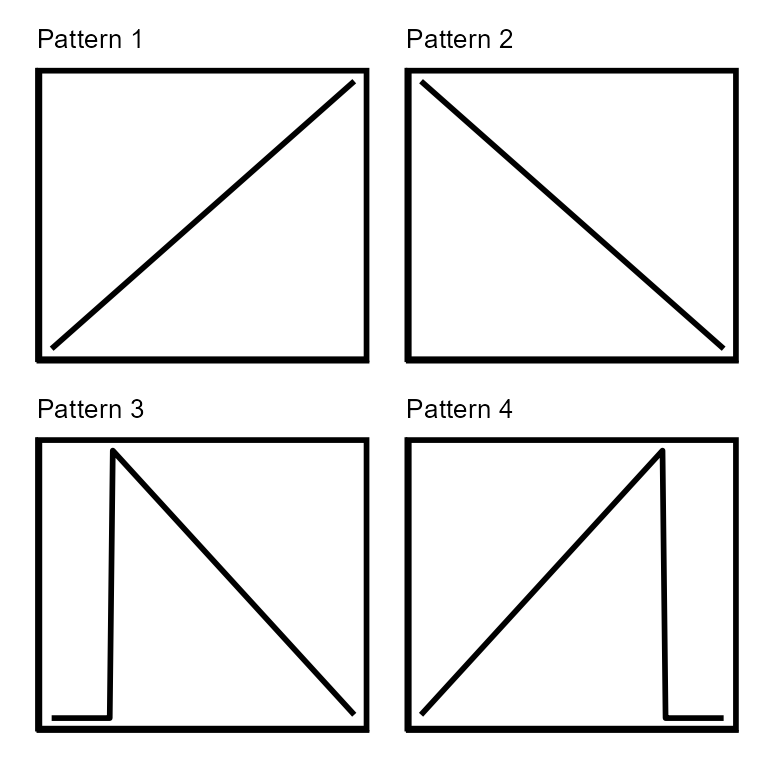
Prophage-like:
There are three block patterns in the Prophage-like pattern class.
The block patterns are representative of integrated genetic elements
that can be excised from the host chromosome and mobilized. The blocks
of read coverage that define this classification are formed when the
reads of mobilized genetic elements packaged by VLPs map back to their
respective integration sites in the host bacterium’s chromosome.
Prophage, phage-inducible chromosomal islands (PICIs), and transposons
are all examples of genetic elements that fall into the Prophage-like
class. During pattern-matching, both the heights and widths of block
patterns are altered and all pattern variations are translated across
the contig. The block pattern widths never get smaller than 10,000 bp by
default, however this can be changed with the minBlockSize
parameter. Pattern 1 represents a Prophage-like element that is entirely
on the contig while patterns 2 and 3 represent Prophage-like elements
that trail off the right or left side of the contig, respectively. While
a Prophage-like classification is not an example of transduction by
itself, there may be transduction associated with Prophage-like
classifications. The improper excision of Prophage-like elements may
lead to the specialized transduction of genes neighboring the element’s
integration site. TrIdent’s specializedTransductionID()
function (explained in detail below) will attempt to detect specialized
transduction events associated with Prophage-like classifications.
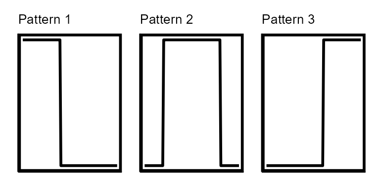
noPattern:
Since the best pattern-match for each contig is determined by comparing match-scores amongst all pattern-variations from all pattern classes, we needed a ‘negative control’ pattern to compare against. The ‘NoPattern’ ‘pattern’ serves as a negative control by matching to contigs with no read coverage patterns. We made two NoPattern patterns which consist of a horizontal line the same length as the contig being assessed at either the average or median read coverage for a contig. This pattern is not re-scaled or translated in any way. Note that read coverage patterns are heavily dependent on the depth of read coverage achieved during sequencing and therefore very rare transduction events may not achieve sufficient read coverage for detection with read coverage pattern-matching. Rather than label contigs with no read coverage pattern as having ‘no transduction’, we instead label them as having ‘no pattern’.
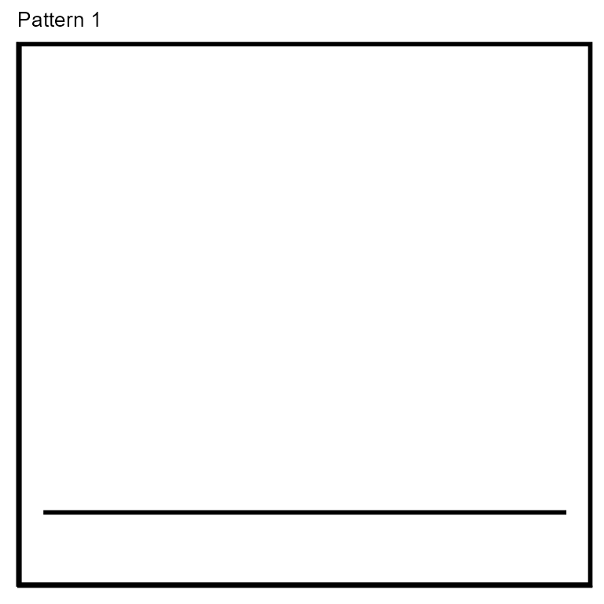
Highly active/abundant and heterogenously integrated/present Prophage-like elements
Prophage-like elements that are actively replicating or are highly
abundant will typically generate more sequencing reads than the rest of
their host bacterium’s chromosome. This may create a region of elevated
read coverage at the element’s insertion site in the whole-community
fraction read coverage. Conversely, if a Prophage-like element is
integrated into only a portion of the host bacterial population, there
may be a dip or depression in read coverage at the integration site in
the whole-community read coverage. In order to determine if the
whole-community read coverage is elevated or depressed at the site of a
Prophage-like element, one must know the Prophage-like element’s genomic
location. While some tools rely on annotation information to identify
Prophage-like elements in whole-community metagenomes,
TrIdentClassifier() uses the VLP-fraction read coverage
patterns. The locations of Prophage-like pattern-matches are used to
calculate the Prophage-like:non-Prophage-like whole-community read
coverage ratio. Prophage-like patterns with whole-community read
coverage ratios greater than 1.15 are labeled as ‘elevated’ while ratios
less then 0.75 are labeled as ‘depressed’.
NoPattern classifications with high VLP-fraction:whole-community read coverage ratios
If a contig receives a noPattern classification, it proceeds to an additional classification step which either leaves the classification as is or re-classifies the contig as having a high VLP-fraction:whole-community read coverage ratio (‘HighCovNoPattern’). In other words, contigs with the HighCovNoPattern classification have even read coverage across the contig (i.e. no notable read coverage pattern) and the VLP-fraction read coverage is notably higher than the whole-community read coverage. This re-classification is necessary because certain biologically significant events that may be of interest to the user can have these characteristics. First, certain transduction events, specifically those associated with the Sloping classification, may be so long that they extend across multiple contigs. The ‘tails’ of the sloping patterns created by these events may have little to no actual sloping (no pattern) but relatively high read coverage (Fig S2 Kleiner et al., 2020). Second, there is evidence that membrane vesicle (MV) mediated transduction (also known as vesiduction or protected extracellular transformation) produces relatively even read coverage patterns when purified MV sequencing reads are mapped back to their bacterial chromosome of origin (Faddetta et al., 2022). Lastly, phage genomes that have assembled into contigs in the whole-community fraction may generate high levels of even read coverage as the phage reads in the VLP-fraction map back to their own genome sequences. Contigs with median VLP-fraction:Whole-community read coverage ratios greater than 2, in other words contigs where the median VLP-fraction read coverage value is 2x the whole-community median read coverage value, are re-classified as HighCovNoPattern.
Reference: Faddetta, T., Vassallo, A., Del Duca, S. et al. Unravelling the DNA sequences carried by Streptomyces coelicolor membrane vesicles. Sci Rep 12, 16651 (2022). https://doi.org/10.1038/s41598-022-21002-z
Usage
Default arguments:
TrIdentOutput <- TrIdentClassifier(
VLPpileup = VLPFractionSamplePileup,
WCpileup = WholeCommunitySamplePileup
)
#> Reformatting pileup files
#> Starting pattern-matching...
#> A quarter of the way done with pattern-matching
#> Half of the way done with pattern-matching
#> Almost done with pattern-matching!
#> Determining sizes (bp) of pattern matches
#> Identifying highly active/abundant or heterogenously integrated
#> Prophage-like elements
#> Finalizing output
#> Execution time: 23.19secs
#> 1 contigs were filtered out based on low read coverage
#> 0 contigs were filtered out based on length
#>
#> HighCovNoPattern NoPattern Prophage-like Sloping
#> 1 1 4 3
#> 3 of the prophage-like classifications are highly active or abundant
#> 1 of the prophage-like classifications are mixed, i.e. heterogenously
#> integrated into their bacterial host population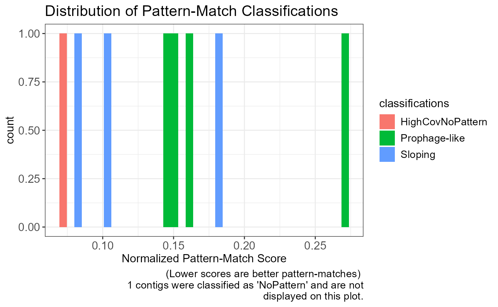
Arguments/Parameters
TrIdentClassifier(VLPpileup, WCpileup,
windowSize = 1000, minBlockSize = 10000,
maxBlockSize = Inf, minContigLength = 30000, minSlope = 0.001,
suggFiltThresh = FALSE, SaveFilesTo
)-
VLPpileup: VLP-fraction pileup file. -
WCpileup: Whole-community pileup file. -
windowSize: The number of basepairs to average read coverage values over. Options are 100, 200, 500, 1000 ONLY. Default is 1000. -
minBlockSize: The minimum size (in bp) of the Prophage-like block pattern. Default is 10000. Must be greater than 1000. -
maxBlockSize: The maximum size (in bp) of the Prophage-like block pattern. Default is NA (no maximum). -
minContigLength: The minimum contig size (in bp) to perform pattern-matching on. Must be at least 25000. Default is 30000. -
minSlope: The minimum slope value to test for sloping patterns. Default is 0.001 (i.e minimum change of 10x read coverage over 100,000 bp). -
suggFiltThresh: TRUE or FALSE, Suggest a filtering threshold for TrIdent classifications based on the normalized pattern-match scores. Default is FALSE. -
SaveFilesTo: Optional, Provide a path to the directory you wish to save output to. A folder will be made within the provided directory to store results.
Output
TrIdentClassifier() outputs a histogram displaying the
overall abundance and quality of pattern-matches in addition to the
composition of classifications. The displayed pattern-match scores are
normalized by dividing each score by its associated contig length. The
scores are normalized to visualize the overall quality of
pattern-matching for the entire dataset. Remember, smaller pattern-match
scores correspond to better pattern-matches.
The output of TrIdentClassifier() is a list containing
five objects:
- SummaryTable: A table containing the classification information for all contigs that were not filtered out.
- CleanedSummaryTable: A cleaned summary table containing the classification information for all contigs classified as Prophage-like, Sloping and HighCovNoPattern.
- PatternMatchInfo: A list of pattern-match information that is used by other functions in TrIdent.
- FilteredOutContigTable: A table containing contigs that were filtered out and the reason why (low read coverage or too short).
- windowSize: The
windowSizeused.
Save the desired list-item to a new variable using its associated name.
Summary table:
TrIdentSummaryTable <- TrIdentOutput$SummaryTable| contigName | classifications | normMatchScore | VLPWCRatio | matchSize | startPosBp | endPosBp | proLikeWCReadCov | proLikeWCReadCovRatio | slope |
|---|---|---|---|---|---|---|---|---|---|
| NODE_62 | Prophage-like | 0.1428571 | NA | 171000 | 62000 | 233000 | Elevated | 1.4880 | NA |
| NODE_135 | Prophage-like | 0.2737766 | NA | 32000 | 149000 | 181000 | Elevated | 1.2795 | NA |
| NODE_1088 | Sloping | 0.0802549 | NA | 63000 | 1000 | 64000 | NA | NA | 0.0024 |
| NODE_352 | Sloping | 0.1829770 | NA | 121000 | 1000 | 122000 | NA | NA | -0.0001 |
| NODE_368 | Prophage-like | 0.1530534 | NA | 30000 | 26000 | 56000 | Depressed | 0.4001 | NA |
| NODE_560 | HighCovNoPattern | 0.0694395 | 16.6016 | 95000 | 1000 | 96000 | NA | NA | NA |
| NODE_617 | Prophage-like | 0.1613141 | NA | 48000 | 34000 | 82000 | Elevated | 1.7726 | NA |
| NODE_1401 | NoPattern | 0.1006696 | 0.0192 | 54000 | 1000 | 55000 | NA | NA | NA |
| NODE_2060 | Sloping | 0.1037661 | NA | 27000 | 1000 | 28000 | NA | NA | 0.0275 |
plotTrIdentResults()
plotTrIdentResults() allows users to visualize both the
whole-community and VLP-fraction read coverage and the pattern-match
associated with each contig classified as Prophage-like, Sloping and
HighCovNoPattern.
Function components
Re-building pattern-matches
The TrIdentClassifier() output contains information
needed to re-build each pattern-match used for contig classification. To
re-build a complete pattern-match for visualization,
plotTrIdentResults() uses the pattern-match’s minimum and
maximum values and the start and stop positions.
Plotting read coverage and associated pattern-matches
The whole-community and VLP-fraction read coverage are plotted for each contig classified as Prophage-like, Sloping or HighCovNoPattern. The pattern-match associated with the classification is overlaid on the VLP-fraction read coverage. The whole-community read coverage is displayed for visualization of elevated or depressed Prophage-like region read coverage.
Usage
Default arguments:
TrIdentPlots <- plotTrIdentResults(
VLPpileup = VLPFractionSamplePileup,
WCpileup = WholeCommunitySamplePileup,
TrIdentResults = TrIdentOutput
)Arguments/Parameters
plotTrIdentResults(
VLPpileup, WCpileup, TrIdentResults, matchScoreFilter,
saveFilesTo
)-
VLPpileup: VLP-fraction pileup file. -
WCpileup: Whole-community pileup file. -
TrIdentResults: The output fromTrIdentClassifier() -
matchScoreFilter: Optional, Filter plots using the normalized pattern match-scores. A suggested filtering threshold is provided byTrIdentClassifier()ifsuggFiltThresh=TRUE. -
saveFilesTo: Optional, Provide a path to the directory you wish to save output to. A folder will be made within the provided directory to store results.
Output
The output of plotTrIdentResults() is a list containing
ggplot objects. The list contains all read coverage plots for contigs
classified as Sloping, Prophage-like, or HighCovNoPattern and their
respective pattern-matches.
By default, the plots are displayed with raw read coverage
values. We recommend that users also view plots using
logScale=TRUE as some specialized transduction patterns
occur at such low frequencies they can only be visualized using log
scaled read coverage values.
View all plots:
TrIdentPlots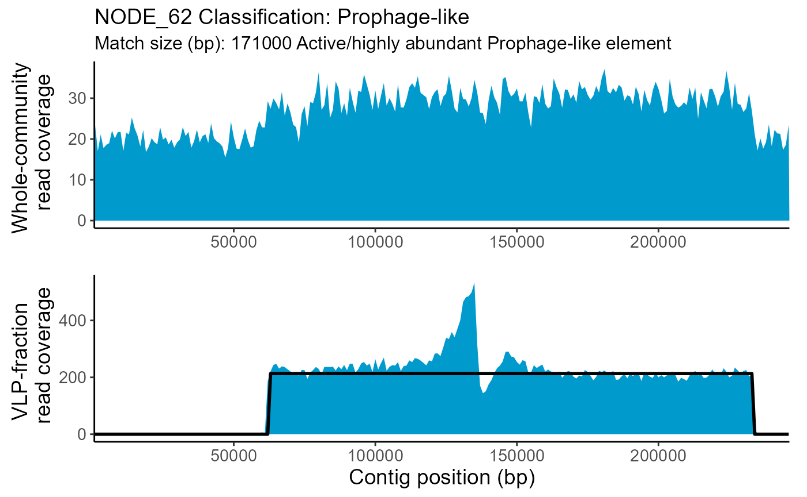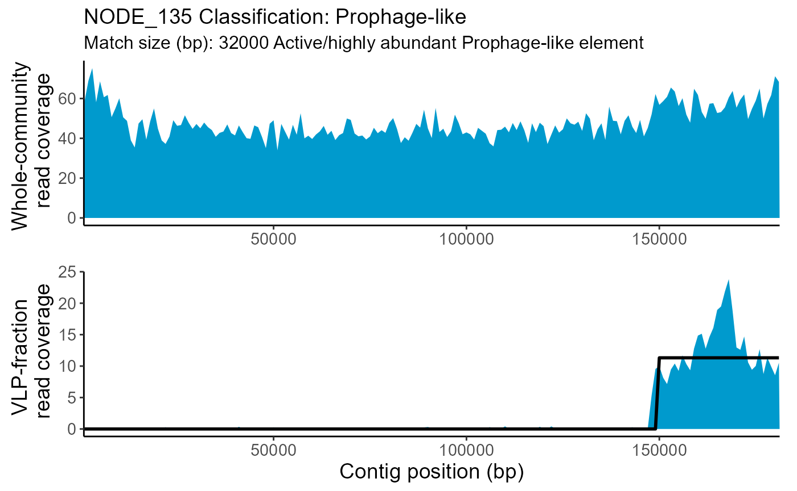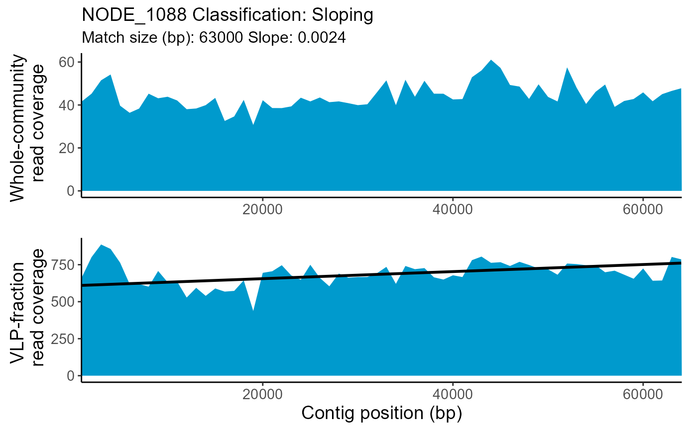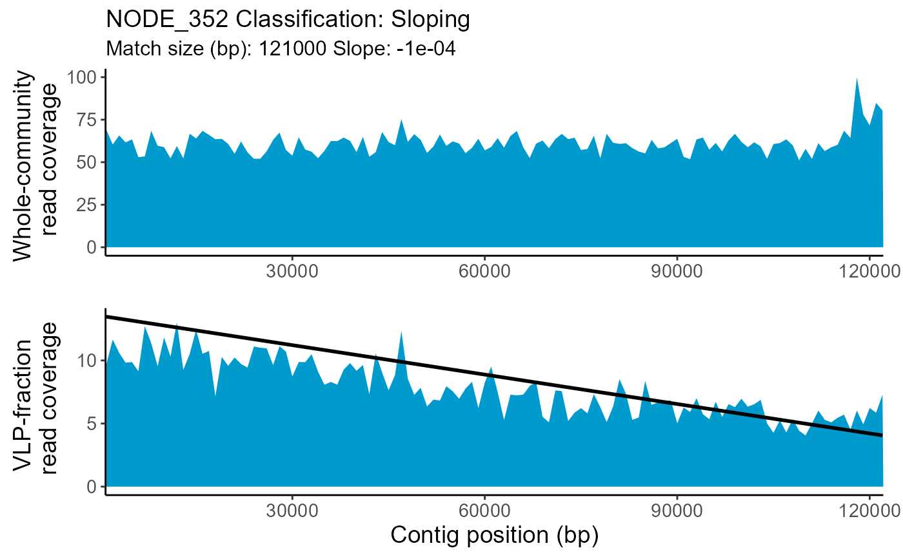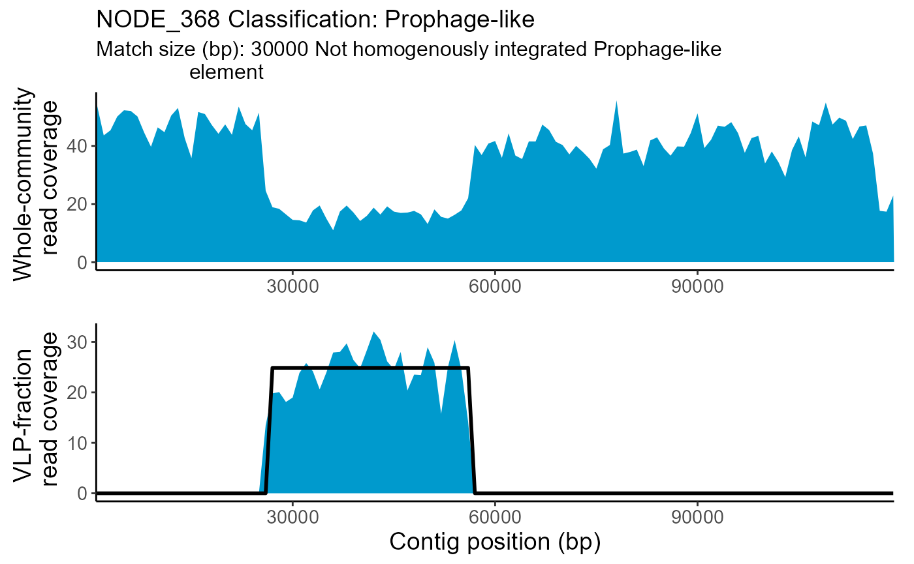 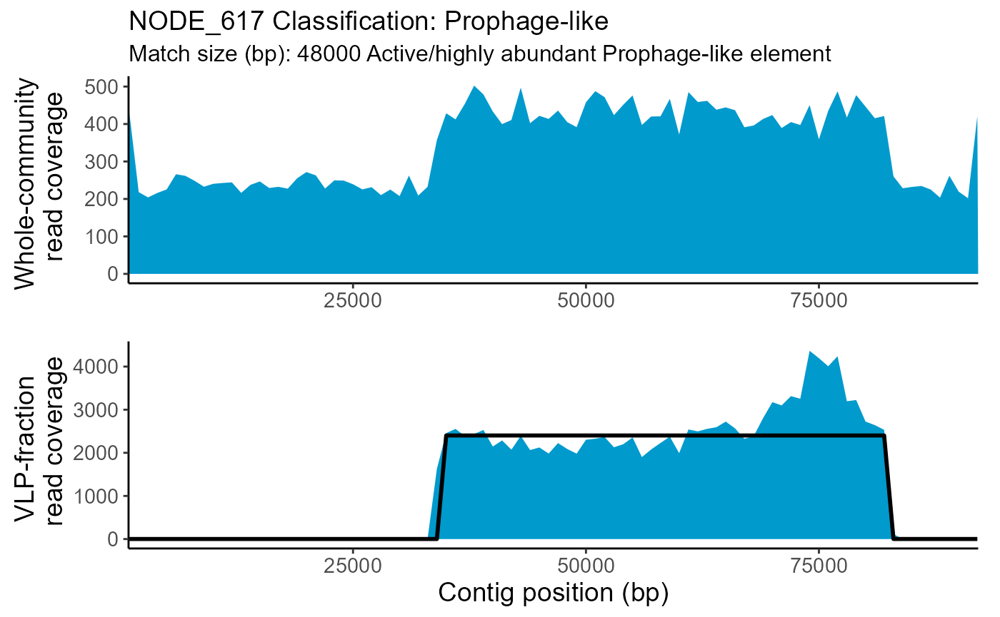
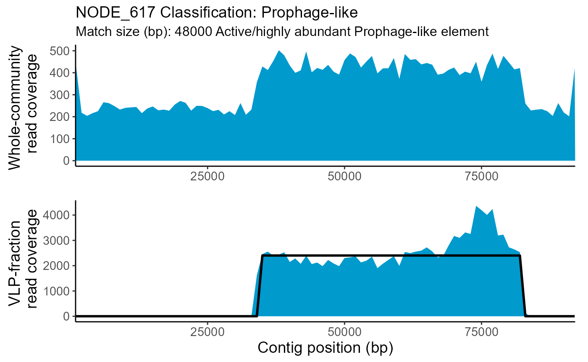
View one plot:
TrIdentPlots$NODE_62
specializedTransductionID()
Specialized transduction occurs when an integrated Prophage-like
element both excises and packages a small portion of bacterial DNA
directly outside the borders of its insertion site.
specializedTransductionID() searches contigs classified as
Prophage-like for dense read coverage outside the borders of the
Prophage-like patterns that might represent specialized transduction
events. Because specialized transduction tends to be fairly short (a
couple kbps) compared to generalized, lateral or GTA transduction (tens
to hundreds of kbps), averaging read coverage over a 1,000 bp distance
(i.e using a windowSize=1000) can ‘blur’ specialized
transduction patterns. This is why specialized transduction is not
identified in TrIdentClassifier(). Instead, we use the
locations of Prophage-like elements identified with
TrIdentClassifier() to guide our search for specialized
transduction in specializedTransductionID().
Note that specializedTransductionID() results should not
be taken at face value and some manual curation is needed! We recommend
careful examination of the output plots to determine if you agree with
the specializedTransductionID() results. Setting
logScale=TRUE will plot the read coverage in log10 scale
and may help with visualization of low-frequency specialized
transduction events. Be aware that in some cases, log scaled read
coverage can obfuscate the Prophage-like element pattern itself.
Function components
Zoom-in on Prophage-like elements
Since, specialized transduction read coverage patterns are relatively
small, specializedTransductionID() ‘zooms-in’ on
Prophage-like elements to aid with specialized transduction
visualization. To ‘zoom-in’ on Prophage-like elements,
specializedTransductionID() uses the pattern-match
information generated in TrIdentClassifier() to subset the
contig 50,000 bp outside the pattern-match borders.
Identify borders of Prophage-like elements
Since the windowSize used for pattern-matching in
TrIdentClassifier() is likely larger than 100 bp,
the Prophage-like pattern-match border locations will not directly
translate to the border locations at the 100 bp windowSize.
To re-identify the borders of Prophage-like elements, we use a rolling
standard deviation (SD) to detect large changes in read coverage
associated with Prophage-like element borders. First, the contig is
subset surrounding the left and right pattern-match borders. For contigs
that have a Prophage-like pattern-match that trails off the side of a
contig, then only the border that falls on the contig is subset. Next,
for each subset, the rolling SD is calculated between each read coverage
value and the contig position associated with the largest SD is chosen
as the border location. The border locations are marked on the output
plots with black vertical lines.
Search for specialized transduction outside Prophage-like borders
Once the Prophage-like element borders are identified,
specializedTransductionID() starts from the border
locations and searches outwards for dense read coverage that meet the
‘requirements’ for specialized transduction as defined by two parameters
in specializedTransductionID():
noReadCovspecTransLength
specializedTransductionID() first makes sure that any
coverage it detects outside the borders is not disrupted by a defined
region of no read coverage (noReadCov). The default value
for noReadCov is 500 bp. Secondly,
specializedTransductionID ensures that any read coverage it
detects outside of the Prophage-like borders meets a minimum length
requirement (specTransLength). The default value for
specTransLength is 2000 bp. So by default,
specializedTransductionID() will search for coverage
directly outside of the Prophage-like borders that is at least 2000 bp
long and is not interrupted at any point by more than 500 bp of no read
coverage. If these requirements are met,
specializedTransductionID() will label the contig as having
specialized transduction. The ‘end’ of the specialized transduction
region is marked on the output plots with red vertical lines.
Additionally, read coverage plots for contigs with specialized
transduction are colored green instead of blue.
Usage
Default arguments:
SpecTransduc <- specializedTransductionID(
VLPpileup = VLPFractionSamplePileup,
TrIdentResults = TrIdentOutput
)
#> 2 contigs have potential specialized transduction
#> We recommend that you also view the results of this search with
#> logScale=TRUEArguments/Parameters
specializedTransductionID(VLPpileup, TrIdentResults,
noReadCov = 500, specTransLength = 2000,
logScale = FALSE, matchScoreFilter,
SaveFilesTo, specificContig
)-
VLPpileup: VLP-fraction pileup file. -
TrIdentResults: The output fromTrIdentClassifier(). -
noReadCov: Number of basepairs of zero read coverage encountered before specialized transduction searching stops. Default is 500. Must be at least 100. -
specTransLength: Number of basepairs of non-zero read coverage needed for specialized transduction to be considered. Default is 2000. Must be at least
-
logScale: TRUE or FALSE, display VLP-fraction read coverage in log10 scale. Default is FALSE. -
matchScoreFilter: Optional, Filter plots using the normalized pattern match-scores. A suggested filtering threshold is provided byTrIdentClassifier()ifsuggFiltThresh=TRUE. -
SaveFilesTo: Optional, Provide a path to the directory you wish to save output to. A folder will be made within the provided directory to store results. -
specificContig: Optional, Search a specific contig classified as Prophage-like (“NODE_1”).
Output
The output of specializedTransductionID() is a list
containing two objects:
- summaryTable: A table containing the
specializedTransductionID()results for all contigs classified as Prophage-like inTrIdentClassifier(). - Plots: A list of ggplot objects for all contigs classified as
Prophage-like. The plots are ‘zoomed-in’ on the Prophage-like pattern to
aid with specialized transduction visualization. The Prophage-like
element borders identified by
specializedTransductionID()are marked on each plot with black vertical lines. IfspecializedTransductionID()identifies potential specialized transduction, the plot will be colored green instead of blue. The end of specialized transduction will be marked with a red vertical line.
Save the desired list-item to a new variable using its associated name.
Summary table:
SpecializedTransducSummaryTable <- SpecTransduc$summaryTable| contigName | specTransduc | left | right | lengthLeft | lengthRight |
|---|---|---|---|---|---|
| NODE_62 | yes | yes | no | 45400 | NA |
| NODE_135 | no | no | no | NA | NA |
| NODE_368 | no | no | no | NA | NA |
| NODE_617 | yes | yes | yes | 33300 | 9800 |
View all plots:
SpecTransduc$Plots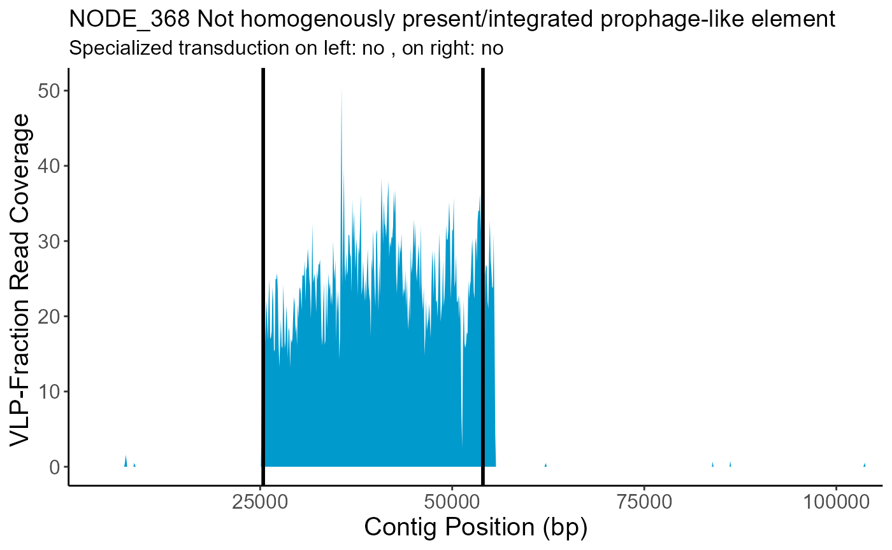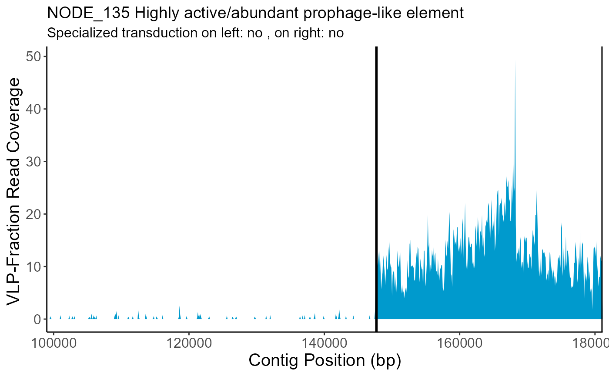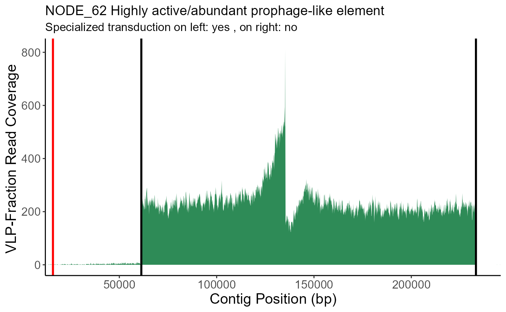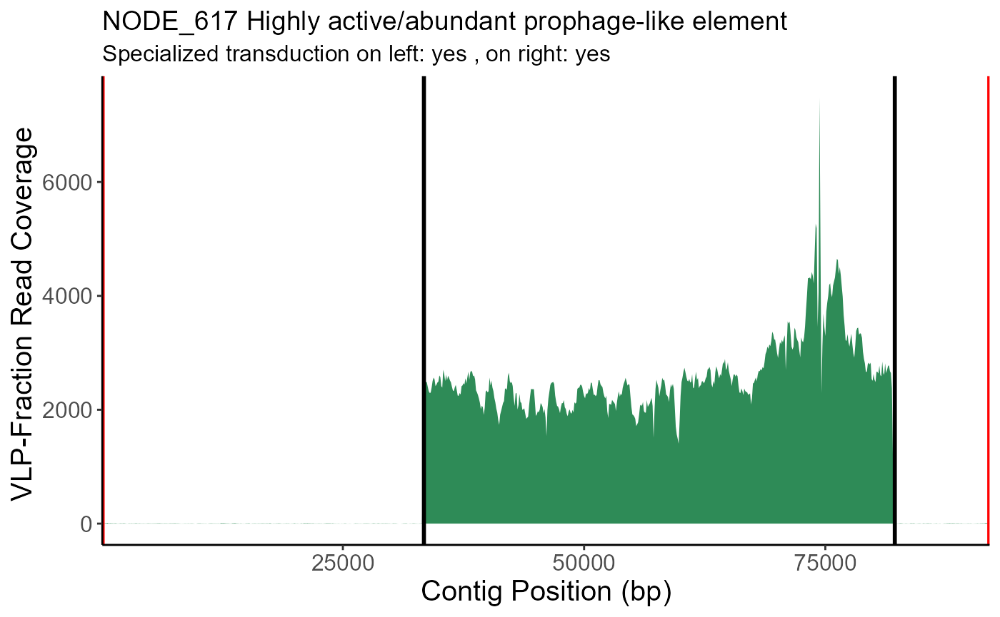
View a specific plot:
SpecTransduc$Plots$NODE_62Generate final TrIdent summary table
If you’d like to combine the summary tables produced by
TrIdentClassifier() and
specializedTransductionID(), try the following:
FinalTrIdentSummaryTable <- merge(TrIdentSummaryTable,
SpecializedTransducSummaryTable,
by = "contigName", all.x = TRUE
)| contigName | classifications | normMatchScore | VLPWCRatio | matchSize | startPosBp | endPosBp | proLikeWCReadCov | proLikeWCReadCovRatio | slope | specTransduc | left | right | lengthLeft | lengthRight |
|---|---|---|---|---|---|---|---|---|---|---|---|---|---|---|
| NODE_1088 | Sloping | 0.0802549 | NA | 63000 | 1000 | 64000 | NA | NA | 0.0024 | NA | NA | NA | NA | NA |
| NODE_135 | Prophage-like | 0.2737766 | NA | 32000 | 149000 | 181000 | Elevated | 1.2795 | NA | no | no | no | NA | NA |
| NODE_1401 | NoPattern | 0.1006696 | 0.0192 | 54000 | 1000 | 55000 | NA | NA | NA | NA | NA | NA | NA | NA |
| NODE_2060 | Sloping | 0.1037661 | NA | 27000 | 1000 | 28000 | NA | NA | 0.0275 | NA | NA | NA | NA | NA |
| NODE_352 | Sloping | 0.1829770 | NA | 121000 | 1000 | 122000 | NA | NA | -0.0001 | NA | NA | NA | NA | NA |
| NODE_368 | Prophage-like | 0.1530534 | NA | 30000 | 26000 | 56000 | Depressed | 0.4001 | NA | no | no | no | NA | NA |
| NODE_560 | HighCovNoPattern | 0.0694395 | 16.6016 | 95000 | 1000 | 96000 | NA | NA | NA | NA | NA | NA | NA | NA |
| NODE_617 | Prophage-like | 0.1613141 | NA | 48000 | 34000 | 82000 | Elevated | 1.7726 | NA | yes | yes | yes | 33300 | 9800 |
| NODE_62 | Prophage-like | 0.1428571 | NA | 171000 | 62000 | 233000 | Elevated | 1.4880 | NA | yes | yes | no | 45400 | NA |
Session Information
sessionInfo()
#> R version 4.2.1 (2022-06-23 ucrt)
#> Platform: x86_64-w64-mingw32/x64 (64-bit)
#> Running under: Windows 10 x64 (build 19045)
#>
#> Matrix products: default
#>
#> locale:
#> [1] LC_COLLATE=English_United States.utf8
#> [2] LC_CTYPE=English_United States.utf8
#> [3] LC_MONETARY=English_United States.utf8
#> [4] LC_NUMERIC=C
#> [5] LC_TIME=English_United States.utf8
#>
#> attached base packages:
#> [1] stats graphics grDevices utils datasets methods base
#>
#> other attached packages:
#> [1] kableExtra_1.4.0 ggplot2_3.5.1 patchwork_1.3.0 knitr_1.49
#> [5] TrIdent_0.0.0.9000
#>
#> loaded via a namespace (and not attached):
#> [1] Rcpp_1.0.13-1 bslib_0.8.0 compiler_4.2.1 pillar_1.9.0
#> [5] jquerylib_0.1.4 tools_4.2.1 digest_0.6.37 viridisLite_0.4.2
#> [9] jsonlite_1.8.9 evaluate_1.0.1 lifecycle_1.0.4 tibble_3.2.1
#> [13] gtable_0.3.6 pkgconfig_2.0.3 rlang_1.1.4 cli_3.6.2
#> [17] rstudioapi_0.17.1 roll_1.1.7 yaml_2.3.10 pkgdown_2.1.1
#> [21] xfun_0.49 fastmap_1.2.0 xml2_1.3.6 withr_3.0.2
#> [25] stringr_1.5.1 dplyr_1.1.4 generics_0.1.3 desc_1.4.3
#> [29] fs_1.6.5 vctrs_0.6.5 htmlwidgets_1.6.4 sass_0.4.9
#> [33] systemfonts_1.1.0 grid_4.2.1 tidyselect_1.2.1 svglite_2.1.3
#> [37] glue_1.8.0 R6_2.5.1 textshaping_0.4.1 fansi_1.0.6
#> [41] rmarkdown_2.29 purrr_1.0.2 tidyr_1.3.1 farver_2.1.2
#> [45] magrittr_2.0.3 scales_1.3.0 htmltools_0.5.8.1 colorspace_2.1-1
#> [49] labeling_0.4.3 ragg_1.3.3 utf8_1.2.4 stringi_1.8.4
#> [53] RcppParallel_5.1.9 munsell_0.5.1 cachem_1.1.0